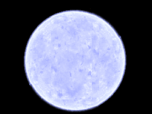
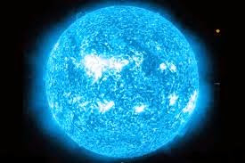

Estrelas são grandes esferas de plasma, mantidas por sua própria gravidade. As estrelas emitem luz, calor e
outros tipos de radiação em razão dos processos
de fução nuclear que ocorrem em seu interior, liberando grandes gantidades de energia.
As estrelas formam-se pela condensação de gases que se aglutinam pela atração gravitacional. As grandes
nebulosas, por exemplo, são “berçários” de estrelas, uma vez que, em seu interior, grandes nuvens moleculares
dão origem a novas estrelas. Quando os gases responsáveis pela formação estelar aproximam-se, a velocidade deles
aumenta, impulsionada pela gravidade local, bem como sua densidade e temperatura.
Durante um período, que pode levar até 10 milhões de anos, essas protoestrelas (estrelas em estágio inicial de
formação) são compactadas por suas próprias gravidades até que a pressão e temperatura em seu núcleo sejam
suficientes para que os átomos de hidrogênio fundam-se, produzindo núcleos de hélio. As estrelas que extraem a
sua energia da fusão dos átomos de hidrogênio são chamadas de estrelas de sequência principal, esse tipo de
estrela corresponde a cerca de 90% de todas as estrelas do Universo.
A partir do momento em que as estrelas tornam-se capazes de realizar fusões termonucleares, o seu combustível é
consumido, até que a estrela evolua para o seu estágio final de vida. As possibilidades são muitas: de acordo
com a massa da estrela e o seu raio, é possível estimar como será o seu futuro. Essas grandezas estelares, como
a massa e o raio das estrelas, são comumente medidas em função da massa solar (M☉) e raio solar (R☉).
Existem diversos tipos de estrelas. Essa designação depende de duas coisas: da classificação espectral, que diz
respeito à temperatura da estrela e ao tamanho e massa da estrela. A classificação espectral é dada em cores. Em
ordem crescente de temperatura, temos as estrelas vermelhas, laranjas, amarelas, amarelas-brancas, brancas,
azuis-brancas e azuis.
Essa definição de cores diz respeito ao pico de frequência emitida pela estrela e a relacionada à temperatura de
emissão de corpo negro. Como as estrelas produzem quase todas as frequências de radiação simultaneamente, ao
olho humano todas parecem-se esbranquiçadas ao serem vistas a olho nu.
Confira alguns dos mais importantes tipos de estrelas que existem:
Estrelas azuis: São estrelas extremamente quentes, a temperatura de sua superfície pode atingir 30.000 K, são
estrelas muito “novas” em comparação com os demais tipos de estrelas. A maioria dessas estrelas foi criada há
menos 40 milhões de anos.
Anãs amarelas: Assim como o Sol, essas estrelas são muito antigas, existindo há bilhões de anos. O futuro dessas
estrelas é o de se tornar uma gigante vermelha.
Anãs vermelhas: São as estrelas mais comuns, representam cerca de 73% das estrelas do Universo. Seu brilho é
fraco, são estrelas pouco massivas.
Gigantes azuis: São estrelas de temperaturas superiores a 10.000 K, muito massivas, podendo apresentar até 250
vezes a massa do Sol.
Supergigantes azuis: São raras, extremamente quentes e brilhantes, podem apresentar até mil vezes a massa solar.
Anãs brancas: Essas estrelas são formadas pelos núcleos de outras estrelas que ejetaram suas camadas externas,
essas estrelas já não produzem mais fusões nucleares e comumente rotacionam em torno de seus eixos com
velocidades muito altas.
Estrelas de nêutrons: São estrelas que foram tão comprimidas que todos os seus prótons e elétrons ejetaram-se em
razão da repulsão elétrica. São muito pequenas, têm entre 5 e 15 km de raio e suas temperaturas excedem centenas
de milhares de graus Celsius.
Em alguns casos, estrelas supermassivas, com massas superiores a três massas solares, podem se colapsar, dando
origem aos buracos negros. Os buracos negros não permitem que a luz escape do seu interior em razão de sua
enorme gravidade.
No entanto, em volta dos buracos negros é possível observar os discos de acreção: são os gases de outras estrelas
que os orbitam. Quando acelerados em direção ao horizonte de eventos, a região dos buracos negros de onde nada
escapa, os gases são aquecidos, passando a emitir diversas frequências de ondas eletromagnéticas.
Digite sua mensagem aqui:
Estrelas mais famosas
Betelgeuse
Curiosidades:Betelgeuse é uma estrela gigante vermelha da constelação de Orion, a décima mais
brilhante do Céu. Está em estágio final de sua vida. Por isso, ela se expande e se contrai, expeli
seu materia para o meio interestelar e se contrai, devido ao desequilílio térmico-gravitacional.
Bellatrix

Curiosidades:Bellatrix é uma estrela maciça com cerca de 8,4 vezes a massa do Sol. Sua idade é
estimada em aproximadamente 20 milhões de anos, longa o bastante para uma estrela dessa massa
consumir o todo o hidrogênio de seu núcleo e se tornar uma estrela gigante.
Rigel

Curiosidades:Rígel é uma supergigante azul de 18 massas solares, e tem cerca de 85 000 vezes a
luminosidade solar. Rígel é a estrela mais luminosa na região do Sol na Via Láctea, e é tão luminosa
que se fosse vista a uma distância de uma UA, ela teria um diâmetro angular de 35° e a sua magnitude
aparente seria -38.
Sirius
Curiosidades:Sirius, também conhecida como Sirius A e Alpha Canis Majoris, tem magnitude aparente (brilho de um objeto como ele aparece no céu, do ponto de vista da Terra) de -1,46 e está localizada na Constelação de Canis Major (Cão Maior), a cerca de 8,6 anos-luz de distância de nós.